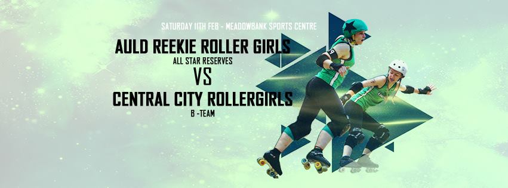

EuroClash Interviews: Leeds Roller Derby
Leeds Roller Derby is, technically, the youngest team attending Newcastle Roller Girls' EuroClash in March, having formed from the merger of Leeds Roller Dolls and Hot Wheel Roller Derby only scant months ago. Whilst Hot Wheel had a lower ranking than Leeds Roller Dolls, we're pretty sure that the new LeedsRD will gain from the breadth of skaters available to it, and would predict that their performance will be at least as good as Leeds Roller Dolls (currently ranked 22nd in Europe by Flat Track Stats). There's certainly a wealth of experience in both teams, as LRD spent much of 2016 in the Tier 1 of British Champs (finishing in the middle of the table), and then in the Mayday Mayhem across in the USA; whilst Hot Wheel, who were just breaking into Europe, debuted at SKOD 2016 in Belgium.
 Leeds Roller Derby don't have a logo, so we're showing you their first practice together instead!
Leeds Roller Derby don't have a logo, so we're showing you their first practice together instead!
LeedsRD Co-Captains Lana del Slay and Nina answered a few questions for us:
We should start with the big news: Leeds Roller Derby didn't exist as a league until late last year, when Leeds Roller Dolls and Hot Wheel Roller Derby merged. You've published your first combined roster, and there's a good contribution from both leagues - what would you say each league brings to the new collaboration?
Lana del Slay: I think each league brings similar things, that's part of the reason we merged. We have great people who bring a range of experience and knowledge but mainly passion and enthusiasm for the sport.
2016 was a pretty good year for both of your source leagues: Leeds Roller Dolls and Hot Wheel both did exceptionally well in British Champs, but also the Dolls had their second successful trip to the USA in the Mayday Mayhem, and Hot Wheel their first "international" tournament at SKOD2016 [beating their seeding by 4 places!], following the Dolls (who attended in 2014). What were the high points for you over 2016, and will the new Leeds Roller Derby be picking up where Leeds Roller Dolls left off, in terms of International derby?
Lana del Slay: Both those things were high points for sure, but I think we’re all in agreement that the decision to merge is the best thing either team has ever done.
Nina: And that’s our biggest priority right now - focusing on us, Leeds Roller Derby. Our number one goal for the season is becoming a team, which may not sound very ambitious considering where both of us came from in 2016 but we feel it's the best thing for us. This isn’t just about 2017, it’s about the season after that, and the season after that. Once we know our teammates then we can focus on international derby. And there is so much talent in the UK and Europe we are happy to concentrate our efforts this side of the pond for now.
This interview is to help promote EuroClash, which is just one big tournament that LeedsRD is throwing itself into in its first year. How are you preparing for taking on some of the top European teams, and who are you most looking forward to playing?
Nina: Lots of training and getting to know each other! In terms of the teams, we are excited to play both ARRG and Dublin. Each team brings something different. ARRG we haven't played in quite some time so will be a bit of an unknown whereas both LRD and HWRD played DRD 2015/2016 [ed: Leeds Roller Dolls took a win in late 2015, whilst Hot Wheel lost last October] so will be interesting to see how we perform against them as Leeds Roller Derby.
With the schedule as it is, LeedsRD will also have the chance to watch quite a few other games - are there any teams, or matchups between teams, which you're particularly looking forward to?
Nina: Yes! Definitely Bear City and Paris. Newcastle and MMR are always good teams to watch too because their blockers are so physical and hard hitting!
2017 is already a big year for Leeds Roller Derby, but is there anything else coming up in the future for the league?
Lana del Slay: So much is happening in the Leeds Roller Derby camp. We are beavering away putting the final touches to our season outside of the British Champs. We plan to have a few home games over the year where we can hopefully showcase our full league and host games for the A and B team as well as our Junior league. October is going to be a very big month for us. We’re going to be celebrating 10 years of roller derby in Leeds with our rebrand which we’re going to be launching then, and let's not forget the return of the Great Yorkshire Showdown which is also going to be in October.
Newcastle's Hinnies off to Champs
We're tracking the Northern divisions of the British Champs this year, via a focus on particular teams in each Tier. The Whippin' Hinnies, Newcastle B, are our Tier 2 North team, and we're starting by giving you a bit of background.
Newcastle Roller Girls have had a good relationship with British Champs over the last two years - in 2015, the Canny Belters took the win in the Tier 2 tournament (after winning the Tier 2 North itself), while in 2016, promoted to Premier Tier, they won the entire thing.
This year, though, Newcastle A have decided to step down from the tournament to pursue more international fixtures, and have handed the baton of British Champs to their B-team, the Whippin' Hinnies. Competing in the Tier 2 North, the Hinnies will have their first game of the Championships this weekend, against Cambridge Rollerbillies [hosted by Rainy City Roller Derby].
According to Flat Track Stats, the Hinnies have the most difficult spot in the tier; but start-of-season rankings are the least accurate, due to the tendency for roster changes in the off-season, and other significant changes.
 The Whippin' Hinnies with Royal Swedish Roller Derby, 2016
The Whippin' Hinnies with Royal Swedish Roller Derby, 2016
Whippin' Hinnies Co-Captain Method Mam talked to us about how the team are feeling about their first Champs challenge.
- Compared to some B teams, the Whippin' Hinnies always have quite a busy schedule, and 2016 continued that trend with plenty of action. What was your highpoint of the previous season?
Ah, that's tough one. We certainly enjoyed playing The Royal Swedish Roller Derby, they were a super fun team and it was an exciting game. We were also really proud to play a double header with our Belters against ARRG All-Stars and All-Star Reserves and to manage a double win at home at the end of last season. ARRG was one of the first teams NRG ever played and are a league we've always looked up to.
- The Hinnies are one of two B teams in the Tier 2 North, along with Rainy B. In your case, though, you're replacing the A team as Newcastle's Champs representatives. With the Canny Belters having won the Tier 1 last year, is there additional pressure to live up to the standard they've set?
I don't think the Hinnies feel any extra pressure due to the Belters knock out performance last year. We're one big league; we have three competitive teams now, we practise together, coach each other and celebrate each others' successes. The Hinnies are in it this year for the learning experience and the opportunity to play a super high standard of competitors.
- The Tier 2 North contains a few teams which the Hinnies have played pretty recently - the aforementioned Rainy B, and your first opponents this weekend, Cambridge Rollerbillies. Both of those teams gave you very tough games last year: how do you feel about facing them again in Champs?
Excited! Both games were really good and given our ranking differentials we were happy with the results. We also experienced quite different styles of play from these two teams which meant both games were interesting. We can't wait to get stuck into the next 'round' this weekend!
- Outside of Champs, which admittedly is a pretty packed schedule, is there anything else planned for the Hinnies this year? [You've managed an international bout every year since 2014…]
That would be telling! (entire team adopts air of mystery...) You'll just have to keep an eye on the fixtures page on our website 
Non-US/Canadian Derby: 18/19th February Edition
As is traditional, we're bringing you another roundup of the upcoming Roller Derby this weekend from across the world. As always, we're using Flat Track Stats for much of this information - for regions with less good coverage, we also do a bit of intensive searching.
Predictions of bouts are from FTS, if possible, and from our own SRD Rank where FTS cannot make predictions (for example: Latin America, or non-MRDA men's bouts).
If we've missed you from our roundup, please let us know!
Scotland
As far as we know, there's only one Scottish roller derby fixture this weekend (but see the Other Events section for exciting things in Edinburgh):- On Sunday, Glasgow Men's Roller Derby are playing their first public bout, hosting Barrow Infernos [FTS][EVENTS], ahead of their British Champs appearances. (This bout is part of their progress in joining MRDA.) (FTS can't predict this; based on their single result, SRD Rank predicts a loss for the home team, but with low confidence.)
UK
As will be the case for the next few months, most of the bouts in the UK are part of British Champs:- In Manchester, the Tier 2 North starts off, with both of the newly-added B teams playing: hosts Rainy City Roller Derby's Bet Lynch Mob against Wirral, and Newcastle's Whippin' Hinnies against Cambridge Rollerbillies. [FTS Tournament][EVENT] (FTS predicts wins for the host, and for Cambridge.)
- In Nottingham, the Tier 3 West begins, with hosts Nottingham playing the Leicestershire Dolly Rockits, and Sheffield Steel v Wolverhampton Honour Rollers [FTS Tournament][EVENT] (FTS predicts two very close games, with the hosts' game particularly knife-edge.)
- and finally, in Lincolnshire, the Tier 4 East kicks off, with hosts Lincolnshire Bombers against Suffolk, and Wiltshire against Oxford Wheels of Gory [FTS Tournament][EVENT] (the hosts are making the most of the booking, with a roller disco to finish off). (FTS predicts wins for Suffolk and Wiltshire.)
Europe
In Europe, there's the usual mix of national championships and individual fixtures:- On Saturday and Sunday, the French Nationale series continues with the second half of the Men's Qualifiers hosted by Roller Derby Avignon, as Grenoble's Quadstrators, Orcet, Mâcon, Dijon's La Raclée , Metz & Strasbourg's Team Rock'Est and Lyon's Mon Cherrry contest for placements.[FTS Tournament][EVENT] (FTS can't predict these bouts. SRD Rank favours Orcet, and considers the rest pretty closely matched.)
- In Oslo, there's a triple header, as Oslo Roller Derby invite Dresden and Norrköping for three bouts on Saturday[FTS 1,2,3] [EVENT] (FTS expects the hosts and Norrköping to be close enough that it's hard to call which will win overall.)
- And in Namur, Belgium, there's a double-header, as Namur B play Mons' Freaky Mons'ter Girls [FTS] while Namur A take on Utrecht's Dom City [FTS] [EVENT] (FTS expects a double win for the hosts.)
- Frankfurt, Germany hosts a double-header too, as the hosts Bembel Town play Vagine Regime Central Europe [FTS], followed by South German Men's Roller Derby versus DHR (the Kiel/Aarhus Men's team)[FTS] [EVENT] (FTS can't predict either bout, due to exhibition teams not being rankable.)
- The double-headers continue in Amsterdam on Sunday, as the hosts A play the Rolling Candies of Amiens [FTS] and their B team contests Roller Derby Twente [FTS] [EVENT] (FTS expects a win for Amsterdam A, but a loss for the B team)
- Also, in the Netherlands, on Saturday, The Hague's Parliament of Pain B (the Jokers) host Rotterdam's Killer Bees [FTS][EVENT] (FTS expects the Bees to take it.)
- On Saturday, in Trondheim, Norway, Nidaros B are playing Bergen's Wet City Rollers [FTS][EVENT] This is Wet City's first bout, so we can't predict a winner!
- In a late addition: as part of their 7th Birthday celebrations, Paris Rollergirls are hosting a bout against Vagine Regime Europe.[EVENT] See below for more details on the full event.
Pacific
As far as we know, the Pacific Region is still in the recruitment and training phase of its current season.Latin America
We're not aware of any events in Latin America this weekend. (This doesn't mean that there's nothing going on, though - we're still improving our mechanisms for detecting bouts in this area.)- Proof of this: last minute addition for the first bouts of the 4th Torneo Distrital de Roller Derby (in Colombia), today [19th Feb] [EVENT]
Other Events
Our semi-regular "other events" section highlights things further in the future you might want to keep an eye on.Lorrae Evans is following after her Victorian Roller Derby comrades by running bootcamps in
- Edinburgh (Auld Reekie hosts) on the 18th [https://www.facebook.com/events/142726422874832/]
- and Sheffield (Sheffield Steel hosts) on the 25th of February [https://www.facebook.com/events/1133248506797019/].
If you're not in the area, Rainy City Roller Derby also have an exciting guest, as Mick Swagger is holding Strategy bootcamps on multiple dates in Manchester:
- 19th - https://www.facebook.com/events/164092490752732/
- 25th - https://www.facebook.com/events/247790305666077/
- 18th/19th Feb https://www.facebook.com/events/710437312455419/
Seeing in the New: National Teams in Dundee.
This weekend sees a double-dose of National Teams action for those in Scotland, as Dundee hosts a combined event with Team Scotland Roller Derby and Power of Scotland both on track.

First up, the Training Team for Team Scotland will be holding a Black v White bout, competing against themselves as part of the selection process for the new Team Scotland. After playing as two teams last weekend in Belgium (and winning both games), all of the skaters will be at their best, and bringing you (by definition), the highest level roller derby in Scotland.
Secondly, the Power of Scotland roster from the 2016 Men's World Cup will be playing their swansong bout, against Team Belgium Men's Roller Derby. Symbolically, this is their passing of the torch to the new Power of Scotland training team, who are currently undergoing the selection process after their tryouts in January.
With the close connection between the National Teams, we were delighted to be able to talk with Rosie Peacock (PoS 2016 LUM/Assistant Coach, TS 2017/8 Head Coach) and Laura "Milky" Liston (PoS 2016 Coach, member of TS 2017/8 Training Team) about things. Between them, the two were selected to Captain the Team Scotland rosters in Belgium, so they have a great feel for the team.
First question, then: How did it feel to be selected as a Captain for the bouts last weekend?
Rosie: So, Milky captained both in the end because I had too much caffeine and got super radge... Me and Milks were the only two who were nominated, but it was good the team trusted us to do the thing.
Laura: It was lovely knowing some of the team had nominated us, and it was such an amazing opportunity to Captain the squad, but yeah, we were the two nominated haha
So, following up on that: Team Scotland won both their games, with both rosters against Belgium. How do you feel the games went - what are you happiest about, and is there anything you might work on?
Rosie: I think outer defence side walls are really tight and fluid and adaptive; I'd love to work more on our offer credit and jammer pairings, but that's something we can't progress too much further until we have our final squad and definitely establish roles... I need to keep my temper and not drink red bull when pmsing 😂
Laura: I really loved some of the bonds and partnerships we starting building on track, which I think were really apparent throughout the day. I'm looking forward to seeing how they develop in the final squad. Both of the games brought different challenges so it was great to see how we adapted to the change in gameplay style.
And moving to this weekend: obviously we can't talk too much about selection itself, but clearly everyone there is hoping to make the final selection - do you see changes in both your own performance (and gelling) and your teammates already at this point?
Laura: Oh definitely. The opportunity to skate with so many high level skaters has really helped strengthen my skating on a personal level. We've been lucky enough to have Belgium and Cardiff to gel as a team in a competitive environment, and I think both have made a really noticeable improvement to our performances as a team together.
Both of you have strong connections with Power of Scotland, especially the 2016 Squad who are playing as well - against Belgium! - we know the team are treating this as a "sending off" of the old team, but will a tiny tear be in your eyes to see them playing together for the last time?
Laura: Hah! I think I got all my emotions out in Calgary when the whole squad was there. It'll be great to see the guys playing together again but I'm looking forward to seeing what our new squad will look like, and so excited about the future of PoS.
Rosie: I'm looking so forward to playing the best sport in the world, with the best group of humans I've had the pleasure to know x
The doors open for the double header at 11:30, Saturday 11th February, at the Dundee International Sports Centre.
Tickets are £6 in advance (from Brown Paper Tickets), £8 on the door. (Tickets at: http://www.brownpapertickets.com/event/2794252 )
Champions in Reserve: Auld Reekie B start off a busy year.
While it's usually the A teams for a league which get most of the action, Auld Reekie B, the All-Star Reserves, are setting themselves up for a very exciting 2017.
As well as becoming only the joint-second B team to compete in British Champs (along with Newcastle B, the Whippin' Hinnies, and following London Rollergirls B last year), they're also taking Auld Reekie's second bout of the year this weekend, against Central City Rollergirls B, the Slay Belles.

We caught up with Pukeahontas, ASR Co-Captain, for a quick chat about the team's past and future.
The All-Star Reserves had a fairly busy year last year - even managing some international derby against Dresden. What was your highpoint of 2016?
2016 was a mixed bag for me personally, I was off skates for the first 6 months of the year with a knee injury. But then to come back and skate in three amazing games against Batter C, Newcastle Whippin Hinnies and Granite City Northern Fights was incredible. My high point would have to be the Newcastle game, I felt this game was where we really came together as a team on track, we found our rhythm in the second half and I was gutted when I realised it was the last jam. Then we got to watch our pals in the All Stars skate an amazing game, have great chat with the lovely Newcastle skaters in the pub, and a hilarious coach trip back to Edinburgh. For me that day was what being part of ARRG is all about - playing a hard game of derby, and having a great time with great people.
The first bout of the year is against Central City B… whose A team will be at EuroClash with ARRG A. Does this add a bit of symbolism to your bout… and how are you preparing for it?
I think it does add a bit of symbolism, and I actually just think it’s really cool that we have this great level of play in the UK that leagues are well matched like this.
We’ve been training hard, and drilling our tactics on repeat. We want to make sure that we are working as a unit on track, and that all the skaters on the roster trust each other. We don’t know too much about Central City B, we are preparing for a hard game.
The Reserves are also one of two Scottish teams in Tier 3 North of British Champs this year. What are your aims for the tournament?
We had a team meeting about our plans for the year recently, and when we were discussing our goals and how the team might be a completely different line up before we play our games in August; one skater said that, no matter what might change, our goal should be that we feel like team, that everyone is welcomed and trusted. I’d love to support and encourage that environment as captain over the course of the tournament, and I guess winning our tier would be pretty great too!
As always, the All-Star Reserves will be hosting the Slay Belles at Meadowbank Stadium, Edinburgh. Doors open at 2.2opm on Saturday 11th Feb.
Catering provided by Bonnie Burritos.
Tickets are £5 online, or £8 on the door, or £6 for concessions, or free for under 14s. (online sales at: http://www.brownpapertickets.com/event/2860993 )
The Tomodachi Cup Teams: Pan-Asian Spring Rollers!

EuroClash Interviews: Tiger Bay Brawlers
As readers will be aware, we're quite excited about Newcastle Roller Girls' International Derby Tournament; EuroClash (25,26th March). So, we're running a series of interviews with all the attending teams to learn more about them.
This week, we're covering Wales' entry to the tournament, Tiger Bay Brawlers (who were also one of the first teams we ever interviewed for an article, 6 years ago). TBB are certainly the strongest league in Wales, ranked #75 in the WFTDA rankings (they've been a member since 2013), and #16 in Europe by Flat Track Stats. They are also, understandably, a significant contributor of skaters to the Team Wales roster.
The Brawlers were an early adopter of international derby - attending the 2013 SKOD, and the 2014 ECDX in the USA - as well as the first season of British Championships in the Premier division. However, they had a relatively quiet 2016, track-time wise, for reasons we'll get into below...

Tiger Bay Brawlers Captains, Thrill Collins and Steph Howarth, the former also a Team Wales rostered skater, gave us some insight into the team.
Tiger Bay Brawlers had a short season in 2016, thanks to the significant threat of your usual venue being closed, and the effort to find a new one or save the existing venue. Despite this, you managed to fit in quite a lot of Derby into the first half of the year. What were your high points?
The campaign to save our training venue certainly took a lot of time and effort towards the end of last year, and still does now. It's frustrating that so many teams struggle to find a permanent venue to train in. We won't let that take the shine off last year though!
Playing Crime City in Sweden was certainly a highlight. We really came together as a team. It was a huge test of everything we'd been working on and we felt like we rose to the challenge. We came away from that weekend feeling incredibly proud of our achievements.
Unlike a lot of the competitors at EuroClash, TBB didn't fly across to the USA to play American teams (and work on their WFTDA rankings). Was this a conscious choice (it doesn't seem to have harmed your rankings much - you started 2016 at 93rd, and ended it in 75th place!)?
Yes, it was very much a conscious choice. We've travelled to America twice over the last few years and it's placed a big financial burden on the team. On top of that, it's not easy to commit to long trips away if you have family or work commitments, like many Brawlers do. So we wanted to plan a season that avoided people having to make those difficult life vs roller derby decisions as much as possible.
European roller derby has come a long way over the last few years so we decided to test ourselves against our Euro sisters in 2016 instead. It was good to show that you can still make progress in the WFTDA rankings without having to almost bankrupt yourself!
During and after EuroClash, Tiger Bay Brawlers have returned to British Champs, competing in the Premier Tier once more (and against two other EuroClash attendees) - what are your aims for this year's Champs?
Our aim is to enjoy it! We want our teamwork and unity to shine through on track in every game that we play (cheesy, but true).
We're really pleased that British Champs gives us the opportunity to play more UK-based games this year. We'll have games at home and some just over the Severn Bridge in Bristol. All too often, roller derby takes us far away from Cardiff, so it's great that our fans have got more chances to see us play closer to home this year.
As with the previous Team Wales, Tiger Bay Brawlers have contributed a significant number of skaters to the 2017/8 Roster. How does it feel to be such a big part of your national team, especially when their performance so far has been striking?
We’re so proud of all our skaters that are representing Team Wales in the current training squad. There’s such a massive pool of talent in the Welsh squad and it’s great to see how far roller derby in Wales has come these last few years.
It’s also a great way for us to strengthen our links with other local teams so we can learn from each other and continue to push Welsh roller derby to the forefront of the UK derby scene.
With so many great teams attending EuroClash, which are you most looking forward to competing against (and have you been specifically training against their tactics)?
We've never played Paris before, so we're definitely looking forward to that one. We saw some of them in action in the French national team recently at the Road to TBC tournament in Cardiff. They look in great form.
We're doing our research on them, obviously, but we train to play the best version of our game, not our opponent’s.
And, in the downtime between bouts, you'll be having lots of time to watch the remaining teams - who are you most looking forward to watching?
There are so many great games lined up that weekend, I honestly couldn't choose! It's a real testament to the quality and competitiveness of European roller derby right now.
We’re really excited to see what Leeds have to offer this year too. With such a big change to their line up after their merger I think they’ll be a force to be reckoned with this season.
Finally, what else is in Tiger Bay Brawlers' future?
We can't wait to kick off our season on 26 February with the first round of British Champs. It's a home game too, so we're hoping for a great crowd at what might be our last game in our current venue (sniff).
We're really focused on growing the league this year and welcoming more women to roller derby. We've been running an excellent beginners programme since May last year, which we'd like to build on in 2017. It's already produced game-ready skaters so we're looking for opportunities to get them some experience on track.
To help with this, we've done something a bit different - we've set up a Tiger Bay challenge team. It's open to everyone in Tiger Bay as not only do we want to give our newer skaters some game experience, we also want to give them the chance to play side-by-side with our more experienced skaters.
If you're reading this and you'd like to play our challenge team, then get in touch!
Non-US/Canadian Derby: 11/12 February Edition
It's time once more for another look at upcoming Roller Derby from across the globe, this time for the coming weekend.
As always, these bouts are mostly taken from Flat Track Stats records [there's a campaign on iDerby which we're running to make sure these are as complete as possible], with some manual searching across other sources to try to catch poorly represented regions (such as Latin America).
Predictions are from FTS, and from our own SRD Rank for cases where FTS cannot, or declines to, make a prediction.
If we've missed anything, please let us know!
Scotland
There's two big events on in Scotland this weekend:- Both National Teams are in evidence in Dundee, as Team Scotland Roller Derby play themselves in their selection bout; followed by the outgoing Power of Scotland squad having their last hurrah against Team Belgium Men's Roller Derby. The latter bout is in [FTS]. [EVENT]
- Meanwhile, in Edinburgh, Auld Reekie B (the Reserves) are hosting their first game of the season, taking on Central City Rollergirls B (the Slay Belles). Both leagues' A teams will be at EuroClash in Newcastle at the end of next month, so this is something of a B-team taster. [FTS][EVENT] (FTS predicts a fairly likely home team win here)
UK
There's rather a lot of roller derby in the UK this weekend (and will be for the next several months), as British Champs season is ongoing.- In Cardiff, South Wales Silures are hosting the first bouts of the T1 Men's division, taking on Lincolnshire Rolling Thunder themselves, and hosting Tyne & Fear versus the Inhuman League. [EVENT] [FTS Tournament] (FTS can't rank these: SRD Rank expects a very close Silures/Rolling Thunder game, and a strong Tyne & Fear win)
- Meanwhile, in London, the Women's T2 South gets started with London Rockin' Rollers hosting opponents Swansea City (who promoted to T2 this year), and also Kent Roller Girls versus Royal Windsor (demoted from T1 this year).[EVENT][FTS Tournament] (FTS favours Swansea and Royal Windsor)
- And the Women's T4 South also gets started in Plymouth, as Plymouth City host Hereford in their own bout, and also Severn Roller Torrent versus Reaper Roller Derby (of Swansea). [EVENT][FTS Tournament] (FTS favours Hereford and Reaper)
- Annnddd, the Women's T4 West also begins on Saturday, as Cheshire Hellcats host neighbours North Cheshire Victory Rollers, and also Roller Derby Leicester versus Arcadia Roller Derby [EVENT][FTS Tournament] (FTS favours North Cheshire and Leicester, with the latter one of the strongest in the group.)
Europe
In Europe, there's also a lot of National championships still going on, so lots of Derby (and even more outside them):- In France, the Nationale is continuing, with the Men's Championship kicking off this weekend in Lille. This is the "Qualification" tournament and features: Lille's Les Barbiers de Sévices, Nantes' Les Jules Vénères, Bordeaux' S.T.Y.X., Yvelines' Les Damnés, Tours' Track-Ass, and Montmartre's Calebrutes! [FTS Tournament][EVENT]
- Also in France, Saint-Gratien's Roller Derby Panthers host a Triple header, with Panthers Miaou taking on Dijon's Velvet Owls [FTS] and Graou facing Grenoble's Cannibal Marmots [FTS], interspersed by a "Rose v Black" home teams bout [EVENT] (FTS expects Dijon to take the B bout, but the home team to win against Grenoble).
- Snowy mentioned in our interview with Dublin last week, Roller Derby Toulouse are hosting Dublin Roller Derby for a triple header - the A teams [FTS] and the B teams [FTS] playing off, respectively, topped by men's team the Quad Guards taking on Manchester's New Wheeled Order [FTS]. [EVENT] (FTS favours the home teams for all bouts - although expects the Men to be pretty close.)
- and on the Sunday, those Quad Guards aren't getting any rest, as they take on Paris' Panam Squad [FTS], as does New Wheeled Order [FTS][EVENT] (FTS thinks Panam are somewhere between NWO and Quad Guards, and so expects a win and a loss.)
- And yet more French derby on the Sunday, as Orcet hosts a double header, with their Women's team facing Lyon's Grrriottes Girrrls[FTS] and their Men facing the Unnamed Basterds Exhibition team [FTS] . [EVENT] (We can't predict an exhibition team; FTS predicts a very close bout between the women.)
- and in Paris, Lutece Destroyeuses are hosting a double header too, their B team facing off against Villejuif's Badass Ladies [FTS], and their A team taking on a mixed A/B team from Brussels Derby Pixies [no FTS as mixed team].[EVENT] (FTS predicts a win for the B team; and a potentially close thing for the A bout [Lutece A are rated almost halfway between Brussels A and B, so...])
- and finally for France, Epinal's Reaper's Crew host Châlon's Rolling Storms [FTS] also on Sunday [EVENT] (FTS weakly favours the hosts.)
- Up in Finland, the Pohjola Cup's third, and final, fixture of the current tournament is hosted by Kuopio Roller Derby over the weekend. Also competing are Oulu B (Shitty Village), St Petersburg's White Night Furies, Seinäjoki, Rovaniemi and Jyväskylä B (Blockbusters).[EVENT] [FTS Tournament] (Kuopio and Jyväskylä are the most likely winners, by FTS.)
- Over in Sweden, history is being made as Gothenburg Salty Seamen host their very first MRDA Sanctioned game, against visitors Super Smash Brollers (Nottingham).[FTS][EVENT] (FTS predicts a very likely home win, to start off the Seamen well in their MRDA journey.)
- In Denmark, Copenhagen Roller Derby are hosting a double header, with their A team facing Go-Go Gent Roller Derby [FTS], and their B team testing Rainy City Roller Derby B (the Bet Lynch Mob)[FTS] [EVENT] (FTS favours the hosts in both games)
- In Portugal, Rocket Dolls Roller Derby Coimbra are hosting Roller Derby Vigo [FTS][EVENT] (FTS expects a very close bout, with a slight edge to the hosts.)
- In the Netherlands, Nijmegen's Roadkill Rollers are hosting a double header, taking on Dom City Dolls B (the ThunderDoms) themselves [FTS], and hosting Arnhem Fallen Angels versus Roller Derby Twente [FTS]. [EVENT] (FTS predicts wins for Dom City and Twente)
Pacific
We're not aware of any bouts happening in the Pacific Region this weekend.- Victorian Roller Derby League's "Learn To Skate" series kicks off on Monday, however [EVENT], with much of the rest of the Australian leagues also starting their recruitment efforts over the coming weeks.
- It's a similar situation in New Zealand, with Pirate City Rollers' Fresh Meat session on Sunday [EVENT] and other New Zealand teams also in recruitment phase.
Latin America
Latin America, especially Argentina, does have a bit of derby this weekend:- Fawkes Roller Derby are hosting a double header of Argentinean Roller Derby on Sunday. The hosts are facing off against BARD' C team (Cerdas) [FTS], whilst Sailor City Rollers B, the Tsunami Bombs, play the Dirty Fucking Dolls.[FTS] [EVENT] (FTS does not rank Latin America, SRD Rank can predict a win for Sailor B over the DFD.)
Other Events
Our semi-regular "other events" section highlights things further in the future you might want to keep an eye on.The last date in Scald Eagle and Lady Trample's Roller Derby and Ramps bootcamps is this weekend (11th/12th), in Medway, England, also featuring Brawn Swanson. [https://www.facebook.com/events/146844349126661/].
If you missed out, starting this weekend, Lorrae Evans is following after her Victorian Roller Derby comrades by running bootcamps in
- Gothenburg (Dock City hosts) [https://www.facebook.com/events/1316607475077675/] on the 11th,
- Edinburgh (Auld Reekie hosts) on the 18th [https://www.facebook.com/events/142726422874832/]
- and Sheffield (Sheffield Steel hosts) on the 25th of February [https://www.facebook.com/events/1133248506797019/].
Coming up further in the future, applications for Junior Derby Teams are open for C.A.T: Creatures of the Abyss, Europe's first Junior Derby Tournament, hosted in Copenhagen. The closing date for applications is 1 March, with the application form here: https://docs.google.com/forms/d/e/1FAIpQLScyRbAlLBCkqMnsnGi3ktZktVfj3cm-TO4f2DnjztiYhNeMPA/viewform?c=0&w=1
EuroClash Interviews: A Chat with... Dublin Roller Derby
Yesterday, we covered one half of the Irish contingent to Newcastle Roller Girls' EuroClash tournament in March, with the Irish National Team themselves.
Today, we're following up with an audio podcast recorded with Dublin Roller Derby's Snowy. Dublin Roller Derby had a very exciting and packed 2016, with both a US trip (to Beach Brawl, hosted by Gold Coast Derby Grrls in Florida) and plenty of European bouts as well... and their 2017 schedule looks equally busy, with their A team's first bout only a week away on the 11th, over in Toulouse!
Dublin will be competing at EuroClash, and we also expect several of their skaters to be on the Team Ireland roster that competes with Team Scotland there as well.

You can listen to the interview here:
[soundcloud url="https://api.soundcloud.com/tracks/305749218" params="auto_play=false&hide_related=false&show_comments=true&show_user=true&show_reposts=false&visual=true" width="100%" height="450" iframe="true" /]
EuroClash Interviews: Team Ireland Roller Derby
As Newcastle Roller Girls' first International Tournament, EuroClash, 25-26th March, approaches, we're catching up with all of the teams attending to give a little insight to their 2016, and their plans for EuroClash itself.
Today, we're covering one of the two National Teams which will be rematching at EuroClash: Team Ireland Roller Derby. Team Ireland played at the Road to TBC at the end of 2016, but were exceptionally new at the time. With much more experience under their belts, they'll be competing against Team Scotland again in March, as part of their progress towards the Roller Derby World Cup in 2018. Sara Devine and Lt Damn contributed to these responses for the team.

The Team Ireland training roster came together in 2016 just in time for the Road to TBC. How much preparation did you get in before the tournament?
We had only finalised our training squad 1 month prior to the tournament and managed to get in 1 training session before the tournament.
At Road to TBC, Ireland placed a pretty strong 5th, after two particularly close bouts against Belgium and then Scotland. What lessons do you think you learned from TBC, and how happy were you with your performance?
Overall, I was very happy with our performance at road TBC. The skaters who played the event gelled very quickly as a team and honestly if I didn't know better, I'd have thought they'd been training together for much, much longer.
With Dublin Roller Derby also competing at EuroClash, and forming a significant chunk of your roster too, we imagine that the rest of the Ireland roster will be turning up to cheer them on! But what other teams and matchups are you looking forward to watching over the tournament?
I'm personally really looking forward to watch the newly formed Leeds Roller Derby in action to see what they are capable of. Looking at the line up of teams, it won't matter what game is on, it'll be a good one for those watching so I can't wait to see some great derby.
We know that Team Scotland are working hard on their own roster (which will be finalised before EuroClash) and are planning on bringing an even stronger game to the rematch. How are Ireland feeling about the chance to do this over - and how much do you think you've changed in the last few months of training and experience?
We can't wait to get back on track as a team. The skaters have been working their butts off in training weekends, which will have been hosted both in Dublin and Belfast ahead of Euro Clash. Whilst we know know that Scotland will be out to prove a point after their defeat by us at Road to TBC, we will be ensuring that we focus on our game and the things we can control. I have no doubt that Scotland will be coming at us stronger than ever, so we will need to be on top of our game if we are to have a repeat of the result in Wales last year. This year is already becoming quite full of bouts between National teams - after this matchup with Scotland, do Ireland have any other bouts lined up?
We have been discussing potential bouts but nothing has been added to the calender as yet.
Of course, the ultimate aim for all National Teams is the World Cup in Greater Manchester. In 2014, Ireland placed into the Round of 16 stage, losing to a very strong Sweden; your roster is quite similar this time around, potentially, but with 3 years' more experience, how are you hoping to place in 2018?
We will go into the 2018 World Cup having trained as hard as we could have. We will be as prepared as we can be and will work to place as high as possible. Every team going to the world cup will have something to prove and will be wanting the same thing, so all we can do is focus on our game and work together as a unit in order to have the best chance of success.